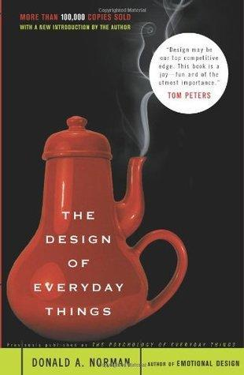
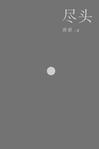
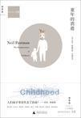
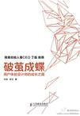
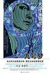
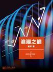
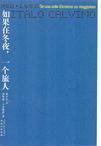
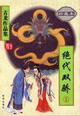

五星推荐（按推荐顺序）
- The Design of Everyday Things by Donald A. Norman（[美]唐·诺曼）
分类：设计

评价： 这是一本高屋建瓴、纵观全局但又细心讲解、细密入微的设计之书。凝练的原则+细致的论述+实际的例子+扩展的注解和引用，是这本书的基本写法。
一本从各种角度来说都很好的好书（包括作者吐槽的没有footnotes，因为我看的kindle版有很好地把后面的注释对应到每个标记的位置）。 受益良多，印象最深刻的是利用信息熵的方法来衡量对应于产品的feature及其对应control数量所产生的复杂度。
反过来利用设计原则也是个很有意思的角度（为安全、权限、或者游戏的乐趣而进行反向的运用）。
接近末尾提到了文本的线性以及超链接的作用，恰好是我一直在思考的东西，不得不感慨，人家那么久之前（我看的是2002年版，说明最晚是这时候写进去的内容）就考虑到许多东西了。
附：全书摘抄
- 尽头 by 唐诺
分类：随笔

评价： 从14年夏天断断续续到15年2月，终于读到了尽头。然而感觉接下来会有很强的余韵延续着。实是一本引人思索至深处的、大树一般的书。另外的收获就是，多了好多想了解的作家以及他们的作品（比如三岛由纪夫、本雅明、福楼拜、昆德拉，当然作者的最爱之一博尔赫斯也是我的最爱）。
- 童年的消逝 by [美] 尼尔・波兹曼
分类：传媒

评价： 毕竟是波兹曼，虽然本书主旨是童年概念的产生和消逝倾向，但大部分的论述精力都放在了印刷品与电视这两种媒介的性质及影响上面。个人觉得当中最为出彩的是本书前半中对文字和印刷的发明和普及与人类社会知识传播形态变化的关系的分析，其中提到很多文字印刷媒介对内容表达的根本性影响与我个人的看法有许多一致之处。
后半则主要分析电视对文字传播体系的破坏，导致成人与儿童趋同化，并引用了大量社会数据加以证明（不过这部分涉及到很多美国政治和社会的知识，个人觉得读起来稍显晦涩枯燥）。
关于中国的问题：波兹曼认为中国没有简单的字母形式的文字，所以印刷给社会带来的影响一开始要小很多（发明的诞生没有赶上一个好时机）。
附：全书笔记
- 破茧成蝶：用户体验设计师的成长之路 by 刘津/李月
分类：设计

评价： 本书前5章对我来说没啥新东西，跟本科时系统分析及设计那一套区别不大，应该算是经典方法论在互联网产品设计上的应用吧。书中提到的好多设计师或产品经理的活，都属于我做运营时的活，比如在1号店时做数据分析、提功能需求、PS小广告图，还有后来在一个创业公司时做市场分析、用户分析、功能路径分析等（当然小公司就是你想做啥做啥只要别浪费时间，说是做运营其实当时除了开发都有涉及）。
第6章简直页页干货，将需求分析与总体交互设计衔接了起来，并说明了几个重要的设计原则（不得不让人想起前面提到的那本 The Design of Everyday Things 和唐·诺曼）。第七章是讲交互设计产出物（原型的线框图、交互说明等）中包含哪些内容，有哪些细节上的技巧。第八章主要是讲团队合作，如何进行设计评审，如何跟进使最终的产品与交互设计一致。第九章简单讲讲测试与评估，十至十二章就是些意识、观念上的东西了，实例很不错。
整本书内容细致有条理，确如评价而言是一本互联网软件交互设计的入门好书。
- 九号梦 by [英]大卫·米切尔
分类：小说

评价： 一个有头无尾的故事里夹杂着更多有头无尾以及无头无尾以及虎头蛇尾的故事。不如《幽灵代笔》和《云图》那么精美，但是混乱中也给人一种很特别的惆怅感。
- 浪潮之巅 by 吴军
分类：科技

评价： 三四年前就开始读，这次终于重头到尾读完。有评论说书中很多观点太过主观，连许多事实都来自于作者臆断，但我觉得至少目前找不出一本书能像这样较全面理性以及精彩地描写整个IT产业几十年里的发展历程。书中的一些关键因素分析很有共鸣。
- 如果在冬夜，一个旅人 by [意大利] 伊塔洛·卡尔维诺
分类：小说

评价： 实验性质很强，算是一本只有开头没有结尾的小说。最后将所有章节都串联了起来，蛮出彩。
- 绝代双骄（全三册） by 古龙
分类：小说

评价： 我读完的第一部古龙原著。情节真真有趣，故事也一环套一环，非常精巧。然而各个人物的结局却能显得平实自然，足见功力。
四星尚可（按阅读顺序）
- 古董局中局3 : 掠宝清单
- 霸王别姬
- 一路去死
- 楼下的房客
- 我的征途是星辰大海
- 盲视
- Steal Like an Artist : 10 Things Nobody Told You About Being Creative
- 中国吃
- 环形世界
- 狂骨之梦
- 乌合之众 : 大众心理研究
注：本文整理自我在豆瓣上记录的书及读完时留下的短评，书籍信息链接及图片来源均为豆瓣。